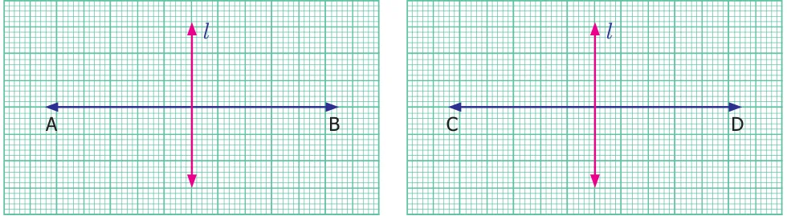
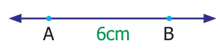
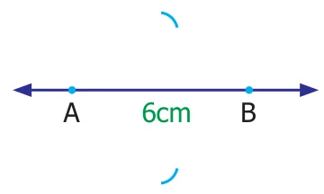
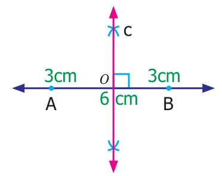

In geometry, construction means to draw lines, angles and shapes accurately. In earlier class we learnt to draw a line segment, parallel and perpendicular line to the given line segment and an angle using protractor.
Now we are going to learn to construct, perpendicular bisector of a given line segment, angle bisector of a given angle and angles \(60^{\circ}\), \(30^{\circ}\), \(120^{\circ}\), \(90^{\circ}\), \(45^{\circ}\) without using protractor.
All the figures shown are not to scale.
5.4.1 Construction of perpendicular bisector of a line segment
In earlier class, we learnt about perpendicular lines. Observe the Fig.5.24.

These are perpendicular lines. In both the cases the perpendicular line \(l\) divides both the line segments into two equal parts. This line is called perpendicular bisector of the line segment. So, a perpendicular line which divides a line segment into two equal parts is a perpendicular bisector of the given line segment.
Now we are going to learn, how to construct a perpendicular bisector to a given line segment.
Example 5.11 Construct a perpendicular bisector of the line segment \(AB = 6\) cm.

Step 1: Draw a line. Mark two points \(A\) and \(B\) on it so that \(AB = 6\) cm.

Step 2: Using compass with \(A\) as center and radius more than half of the length of \(AB\), draw two arcs of same length, one above \(AB\) and one below \(AB\).
Step 3: With the same radius and \(B\) as center draw two arcs to cut the arcs drawn in step 2. Mark the points of intersection of the arcs as \(C\) and \(D\)

Step 4: Join \(C\) and \(D\). \(CD\) will intersect \(AB\). Mark the point of intersection as \(O\)
\(CD\) is the required perpendicular bisector of \(AB\).
Measure \(\angle AOC\). Measure the length of \(AO\) and \(OB\). What do you observe?
Think
- What will happen if the radius of the arc is less than half of \(AB\)?